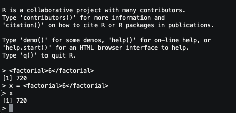
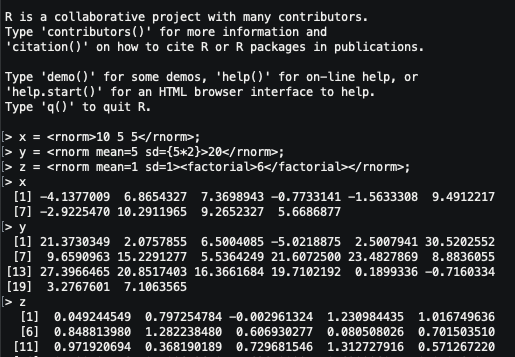
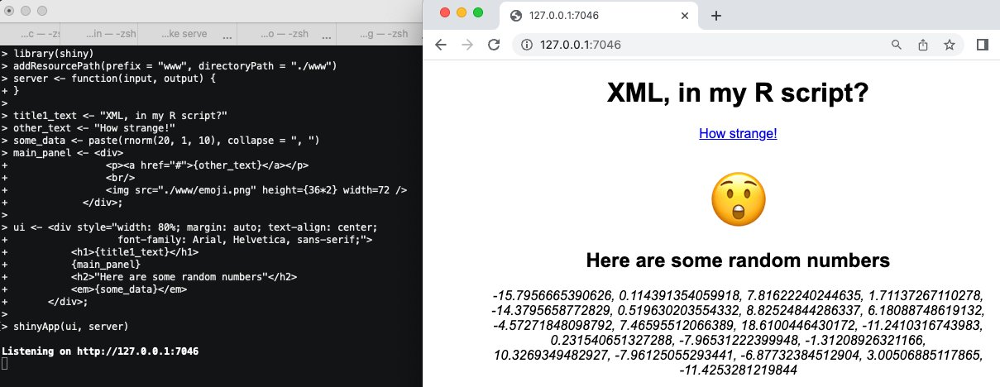

An R grammar experiment
This post was originally published as a Twitter thread.
Recently I was travelling on a plane without WiFi and so I decided to play with the R source code, which I already had on my laptop. I started experimenting with the file src/main/gram.y, which defines R’s language syntax using rules listed in a variant of Backus-Naur Form.
I added some new rules to the grammar that adds a different way to invoke R functions. The new syntax looks like XML, and it feels really weird to use functions in this way.

I set it up so that multiple arguments are space separated child nodes, and named arguments can be added as XML attributes. So, functions with multiple arguments can still be invoked using this strange method. I also made it so R expressions wrapped in curly braces are evaluated.

Why was I creating this monster? Well, I was thinking of JSX - a fun extension to JavaScript that allows you to manipulate XML components directly in the JSX source. With this hack, you can almost do the same thing with Shiny and write the UI in HTML. Kinda neat, right?

So, is this useful in any way? No, probably not. The hack is direct to the R source and I doubt R packages could make this kind of change. So even if you really wanted to do it, you’d have to run a patched version of R. A fun little experiment in writing BNF rules, though.